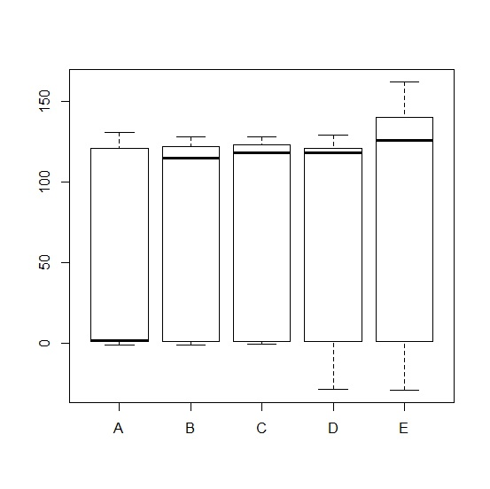
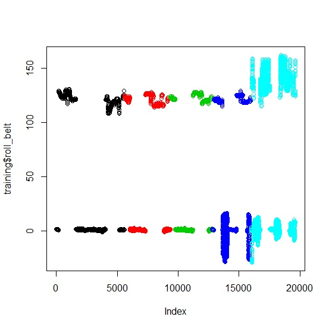
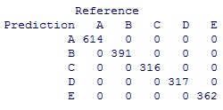
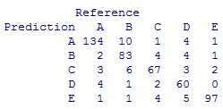

In this project, I'm given data on exercise routines for several different people, and the individuals are performing an exercise using five different methods. My goal is to use that data from accelerometers attached to different parts of their bodies to create a predictive algorithm that estimates what method they used while exercising.
The first step in my analysis is to develop the question. The question we want to answer is the following: How do data we have from accelerometers relate to the method a participant uses to perform and exercise? We wish to create a predictive algorithm to help us answer this question, using the data from the accelerometers to predict the method used to perform the exercise.
We load the training data into R using the following command:
training <- read.csv("C:/.../pml-training.csv",header=T,sep=",")
Our next step is to narrow it down to vaiables that seem relevant. We want to disregard clearly irrevelant variables or variables that wouldn't work in an analysis); to predict X, we want to use data related to X. Since metadata will be less useful to this analysis than the raw data, we'll ignore variables like skewness or kurtosis. Primarily, we'll be interested in the variables in the dataset starting with "gyros," "accel," "magnet," "roll," "pitch," and "yaw." The dependent variable, classe, will also be included in the dataset that we analyze.
To update the dataset with only relevant variables, we use the following command:
relVar <- which(grepl("^gyros_|^accel_|^magnet_|^roll_|^pitch_|^yaw_|classe", colnames(training), ignore.case = F)) training <- training[,relVar]
At this point, we also would generally create data partitions (randomly); one common partition to use would include 60% of the data in the training set, and 40% of the data in the testing set. In this case, there's no need to do this because the entire data set has already been partitioned into a training set, which we're using.
In the training set, we want to graph the dependent variable against each independent variable to see if there's any visible relationship between the variables. Primarily, we want to see if the different classes have different-looking data; if the data looks largely the same for all classes, then there probably isn't any useful relationship between the independent variable and the dependent variable, and we can ignore that independent variable.
We use the following type of command to graph the data:
plot(training$classe,training$[variable name])
An example graph for the variable roll_belt is shown below:
We get observations for each variable as shown below:
roll_belt - visible relation pitch_belt - no clear relation yaw_belt - visible relation gyros_belt_x - no clear relation gyros_belt_y - no clear relation gyros_belt_z - slight visible relation accel_belt_x - no clear relation accel_belt_y - visible relation accel_belt_z - visible relation magnet_belt_x - slight visible relation magnet_belt_y - visible relation magnet_belt_z - visible relation
roll_arm - slight visible relation pitch_arm - slight visible relation yaw_arm - no clear relation gyros_arm_x - no clear relation gyros_arm_y - no clear relation gyros_arm_z - no clear relation accel_arm_x - visible relation accel_arm_y - no clear relation accel_arm_z - slight visible relation magnet_arm_x - visible relation magnet_arm_y - visible relation magnet_arm_z - slight visible relation
roll_dumbbell - visible relation pitch_dumbbell - visible relation yaw_dumbbell - visible relation gyros_dumbbell_x - no clear relation (a few outliers were present, ignored them) gyros_dumbbell_y - visible relation (a few outliers were present, ignored them) gyros_dumbbell_x - no clear relation (a few outliers were present, ignored them) accel_dumbbell_x - slight visible relation accel_dumbbell_y - visible relation accel_dumbbell_z - no clear relation magnet_dumbbell_x - visible relation magnet_dumbbell_y - visible relation (a few outliers were present, ignored them) magnet_dumbbell_z - visible relation
roll_forearm - visible relation pitch_forearm - visible relation yaw_forearm - visible relation gyros_forearm_x - no clear relation gyros_forearm_y - no clear relation gyros_forearm_z - slight visible relation accel_forearm_x - visible relation accel_forearm_y - slight visible relation accel_forearm_z - slight visible relation magnet_forearm_x - visible relation magnet_forearm_y - visible relation magnet_forearm_z - slight visible relation
According to the data above, we can narrow down the set of independent variables further to just 34 variables:
roll_belt yaw_belt gyros_belt_z accel_belt_y accel_belt_z magnet_belt_x magnet_belt_y magnet_belt_z roll_arm pitch_arm accel_arm_x accel_arm_z magnet_arm_x magnet_arm_y magnet_arm_z roll_dumbbell pitch_dumbbell yaw_dumbbell gyros_dumbbell_y accel_dumbbell_x accel_dumbbell_y magnet_dumbbell_x magnet_dumbbell_y magnet_dumbbell_z roll_forearm pitch_forearm yaw_forearm gyros_forearm_z accel_forearm_x accel_forearm_y accel_forearm_z magnet_forearm_x magnet_forearm_y magnet_forearm_z
We update our training set to only include these variables, in addition to the classe variable:
training <- subset(training,select=c(roll_belt,yaw_belt,gyros_belt_z,accel_belt_y,accel_belt_z,magnet_belt_x,magnet_belt_y,magnet_belt_z,roll_arm,pitch_arm,accel_arm_x,accel_arm_z,magnet_arm_x,magnet_arm_y,magnet_arm_z,roll_dumbbell,pitch_dumbbell,yaw_dumbbell,gyros_dumbbell_y,accel_dumbbell_x,accel_dumbbell_y,magnet_dumbbell_x,magnet_dumbbell_y,magnet_dumbbell_z,roll_forearm,pitch_forearm,yaw_forearm,gyros_forearm_z,accel_forearm_x,accel_forearm_y,accel_forearm_z,magnet_forearm_x,magnet_forearm_y,magnet_forearm_z,classe))
To further narrow down our list of variables to simplify our model, we plot each independent variable against the index, and we color the variable based on the classe, using the following type of command:
plot(training$[variable name], col=training$classe)
This makes it easier to see relationships and dependencies among the independent variables and the classe.
An example graph for the variable roll_belt is shown below:
The results are as follows:
roll_belt - clear/interesting relationship yaw_belt - no clear/interesting relationship gyros_belt_z - clear/interesting relationship accel_belt_y - no clear/interesting relationship accel_belt_z - clear/interesting relationship magnet_belt_x - clear/interesting relationship magnet_belt_y - clear/interesting relationship magnet_belt_z - clear/interesting relationship roll_arm - no clear/interesting relationship pitch_arm - no clear/interesting relationship accel_arm_x - no clear/interesting relationship accel_arm_z - no clear/interesting relationship magnet_arm_x - no clear/interesting relationship magnet_arm_y - no clear/interesting relationship magnet_arm_z - no clear/interesting relationship roll_dumbbell - no clear/interesting relationship pitch_dumbbell - no clear/interesting relationship yaw_dumbbell - no clear/interesting relationship gyros_dumbbell_y - clear/interesting relationship accel_dumbbell_x - clear/interesting relationship accel_dumbbell_y - no clear/interesting relationship magnet_dumbbell_x - clear/interesting relationship magnet_dumbbell_y - clear/interesting relationship magnet_dumbbell_z - no clear/interesting relationship roll_forearm - no clear/interesting relationship pitch_forearm - clear/interesting relationship yaw_forearm - no clear/interesting relationship gyros_forearm_z - no clear/interesting relationship accel_forearm_x - no clear/interesting relationship accel_forearm_y - no clear/interesting relationship accel_forearm_z - no clear/interesting relationship magnet_forearm_x - no clear/interesting relationship magnet_forearm_y - no clear/interesting relationship magnet_forearm_z - no clear/interesting relationship
Finally, we narrow our list of independent variables down to the following:
roll_belt gyros_belt_z accel_belt_z magnet_belt_x magnet_belt_y magnet_belt_z gyros_dumbbell_y accel_dumbbell_x magnet_dumbbell_x magnet_dumbbell_y pitch_forearm
We update our training set again, using the below command:
training <- subset(training,select=c(roll_belt,gyros_belt_z,accel_belt_z,magnet_belt_x,magnet_belt_y,magnet_belt_z,gyros_dumbbell_y,accel_dumbbell_x,magnet_dumbbell_x,magnet_dumbbell_y,pitch_forearm,classe))
At this point, we load the caret package:
library(caret)
We also want to set a seed so that the research can be replicated more easily. We use the following command:
set.seed(30)
We now want to pre-process the data. Normally, we would want to impute values to deal with missing the values, but I verified in the data that none of the values for the dependent variables are missing or not available for any observation. However, we also want to center and scale the values, so we pass the following argument at the end of the command that creates the model:
preProcess=c("center","scale")
Because our dependent variable is non-numeric, and because of the method's accuracy, we use the random forest method to fit our model:
modFit <- train(classe ~ .,data=training,method="rf",prox=TRUE,preProcess=c("center","scale"))
When I attempted to run this command in R, the command was too resource-intensive and was causing the program to stop responding, so I randomized the order of the data and selected only the first 2000 observations to use in fitting the model:
training <- training[sample.int(nrow(training)),] traininghead <- head(training,2000)
I then ran the model fitting command above with "training" replaced with "traininghead" in the command. Using the print(modFit) command, we see that the result for mtry=2 has an accuracy of 0.871, and this is the final value selected for the model.
We look at the confusion matrix to analyze our results on the training set:
predictions <- predict(modFit) confusionMatrix(predictions,traininghead$classe)
The model successfully predicts the correct classe for the 1000 observations in the training set (since it was fit using the training set).
This confusion matrix is shown below:
To test it on a new sample, we take the last 500 observations from the randomized training set (we used the first 2,000 to create the model), and we test our model on this:
trainingtail <- tail(training,500) predictions <- predict(modFit,newdata=trainingtail) confusionMatrix(predictions,trainingtail$classe)
This confusion matrix is shown below:
According to the confusion matrix, the model has an out-of-sample accuracy of approximately 88.2%, or an error of 11.8%. The 95% confidence interval for the accuracy is (85.04%,90.89%), so I can say with 95% confidence that the actual out-of-sample error will be between 9.11% and 14.96%.
Citations:
Velloso, E.; Bulling, A.; Gellersen, H.; Ugulino, W.; Fuks, H. Qualitative Activity Recognition of Weight Lifting Exercises. Proceedings of 4th International Conference in Cooperation with SIGCHI (Augmented Human '13). Stuttgart, Germany: ACM SIGCHI, 2013.
R Core Team (2014). R: A language and environment for statistical computing. R Foundation for Statistical Computing, Vienna, Austria. URL http://www.R-project.org/.
Van Essen, D.C., Dickson, J., Harwell, J., Hanlon, D., Anderson, C.H. and Drury, H.A. 2001. An Integrated Software System for Surface-based Analyses of Cerebral Cortex. Journal of American Medical Informatics Association, 8(5): 443-459. URL: http://www.nitrc.org/projects/caret/
Sarkar, Deepayan (2008) Lattice: Multivariate Data Visualization with R. Springer, New York. ISBN 978-0-387-75968-5
H. Wickham. ggplot2: elegant graphics for data analysis. Springer New York, 2009.
A. Liaw and M. Wiener (2002). Classification and Regression by randomForest. R News 2(3), 18--22.